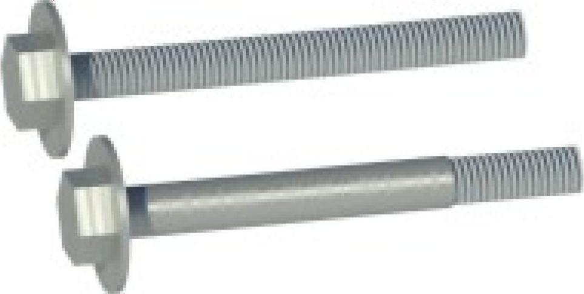

1 Introduction
1.1 Contents of Package
This package contains two Revit component families, Generic ISO Metric Bolt.rfa and Generic ISO Metric Bolt Assembly.rfa, and one macro family, GIMBA.rfa, along with type catalogs and lookup tables. Table 1 shows an overview.
| File(s) | Preview/Description | Component |
Type Catalog |
Materials |
Lookup Tables |
Macros |
|
|---|---|---|---|---|---|---|---|
|
Generic ISO Metric Bolt.rfa Generic ISO Metric Bolt.txtA) |
 | ● | ● | ● | |||
|
Generic ISO Metric Bolt Assembly.rfa Generic ISO Metric Bolt Assembly.txtA) |
● | ● | ● | ● | |||
| GIMBA Geometry.rfaB) | Common 3D geometry of the component families above | ● | |||||
| GIMBA Macros.rfa | Management macros for thread materials, type catalogs, and lookup tables | ● | |||||
| GIMBA.html | This documentation | ||||||
| A) | Type catalog file | ||||||
| B) | Loaded into component families, included for documentation only | ||||||
[TODO: Materials]
1.2 GIMBA or Revit Built-In Bolts?
[TODO: ...]
1.3 Installation
[TODO: ...]